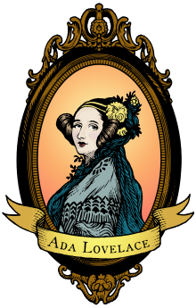

Sobre
Augusta Ada Byron King, Condessa de Lovelace (nascida Byron, 10 de dezembro de 1815 — 27 de novembro de 1852), atualmente conhecida como Ada Lovelace, foi uma matemática e escritora inglesa. Hoje é reconhecida principalmente por ter escrito o primeiro algoritmo para ser processado por uma máquina, a máquina analítica de Charles Babbage. Durante o período em que esteve envolvida com o projeto de Babbage, ela desenvolveu os algoritmos que permitiriam à máquina computar os valores de funções matemáticas, além de publicar uma coleção de notas sobre a máquina analítica. Por esse trabalho é considerada a primeira programadora de toda a história.
Na juventude, seus talentos matemáticos levaram-na a uma relação de trabalho e de amizade com o colega matemático britânico Charles Babbage e, em particular, o trabalho de Babbage sobre a Máquina Analítica. Entre 1842 e 1843, ela traduziu um artigo do engenheiro militar italiano Luigi Federico Menabrea sobre a máquina e complementou com um conjunto de sua própria autoria, que ela chamou de Anotações. Essas notas contêm um algoritmo criado para ser processado por máquinas, o que muitos consideram ser o primeiro programa de computador.

Primeiro programa de computador
Em 1842, Charles Babbage foi convidado a ministrar um seminário na Universidade de Turim sobre sua máquina analítica. Luigi Menabrea, um jovem engenheiro italiano e futuro Primeiro-ministro da Itália, publicou a palestra de Babbage em francês e esta transcrição foi posteriormente publicada na Bibliothèque Universelle de Genève, em 1842.
Babbage pediu a Lovelace para traduzir o artigo de Menabrea para o inglês, adicionando depois a tradução com as anotações que ela mesma havia feito. Lovelace levou grande parte do ano nesta tarefa. Estas notas, que são mais extensas que o artigo de Menabrea, foram então publicados no The Ladies' Diary e no Memorial Científico de Taylor sob as iniciais "AAL".
Em 1953, mais de cem anos depois de sua morte, as notas de Lovelace sobre a máquina analítica de Babbage foram republicadas. A máquina foi reconhecida como um primeiro modelo de computador e as notas de Lovelace como a descrição de um computador e um software.
As notas de Lovelace foram classificadas alfabeticamente de A a G. Na nota G ela descreve o algoritmo para a máquina analítica computar a Sequência de Bernoulli. É considerado o primeiro algoritmo especificamente criado para ser implementado num computador, e Lovelace é recorrentemente citada como a primeira pessoa programadora por esta razão.

Legado
A linguagem de programação Ada foi criada em homenagem à Ada Lovelace pelo Departamento de Defesa dos Estados Unidos. A documentação da linguagem foi aprovada em 10 de Dezembro de 1980.
Em 1981, a Associação de Mulheres na Computação criou o Prêmio Ada Lovelace. Em 1998, A Associação Britânica de Computação criou a Medalha Lovelace e em 2008 iniciou uma competição anual para alunas. A Associação Britânica de Computação é patrocinadora do Lovelace Colloquium, que é uma conferência anual para mulheres estudantes de graduação. A Ada College é uma escola extra-curricular focada em tecnologia localizada em Tottenham Hale, Londres.
Em toda segunda terça-feira de outubro, desde 2009, é comemorado o Dia da Ada Lovelace, que tem como objetivo “dar destaque à mulheres na ciência, tecnologia, engenharia e matemática” além de “criar novos modelos para meninas e mulheres”. Entre os eventos estão a Maratona de edição da Wikipédia, com o objetivo de aumentar a representação das mulheres na Wikipédia em termos de artigos e editores, para reduzir preconceitos de gênero. A Ada Initiative é uma organização sem fins lucrativos dedicada a aumentar o envolvimento das mulheres no Movimento pela cultura livre e em movimentos open source. Em 2009, na ocasião da celebração do primeiro Ada Lovelace Day, a artista plástica Sydney Padua criou a história em quadrinhos "The Thrilling Adventures of Lovelace and Babbage", que ao mesmo tempo que contava a história de Charles Babbage e da condessa Ada Lovelace, também apresenta uma leitura descontraída dos dois. Em 2015 o quadrinho virou um livro, de mesmo nome.